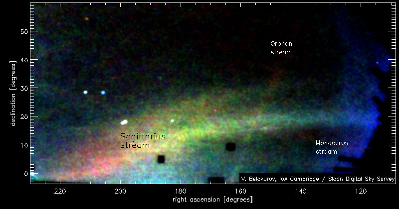

May 8, 2006
Multiple galaxy mergers continue in the Milky Way

The "Field of Streams" — this image is a map of stars in the outer
regions of the Milky Way
covering about one-quarter of the night sky, as observed by the Sloan
Digital Sky Survey (SDSS-II). The trails and streams that cross the image
are stars torn from disrupted Milky Way satellites. The color corresponds
to distance, with red being the most distant and blue being the closest.
The large, forked feature is the Sagittarius stream, further away from us
(lower left) and closer to us (middle right). Other features marked are
the Monoceros ring and the as yet unidentified stream.
(Credit: Vasily
Belokurov, SDSS-II Collaboration)